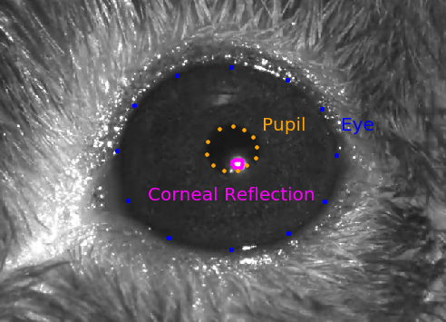

Visual Behavior Neuropixels Session#
Once you’ve selected a session of interest, the corresponding nwb file can be conveniently accessed through the AllenSDK. VisualBehaviorNeuropixelsProjectCache class.
Below, we will walk through what’s contained in each of these session nwb files. For more examples demonstrating how to analyze these data, please refer to the tutorials here
We begin by importing the VisualBehaviorNeuropixelsProjectCache class.
import pandas as pd
import os
import numpy as np
from matplotlib import pyplot as plt
from allensdk.brain_observatory.behavior.behavior_project_cache.\
behavior_neuropixels_project_cache \
import VisualBehaviorNeuropixelsProjectCache
/opt/envs/allensdk/lib/python3.10/site-packages/tqdm/auto.py:21: TqdmWarning: IProgress not found. Please update jupyter and ipywidgets. See https://ipywidgets.readthedocs.io/en/stable/user_install.html
from .autonotebook import tqdm as notebook_tqdm
Now we can specify our cache directory and set up the cache.
# this path should point to the location of the dataset on your platform
cache_dir = '/root/capsule/data/'
cache = VisualBehaviorNeuropixelsProjectCache.from_local_cache(
cache_dir=cache_dir, use_static_cache=True)
We can use the VisualBehaviorNeuropixelsProjectCache to grab the data for one example session:
session_id = 1053941483
session = cache.get_ecephys_session(
ecephys_session_id=session_id)
/opt/envs/allensdk/lib/python3.10/site-packages/hdmf/utils.py:668: UserWarning: Ignoring cached namespace 'core' version 2.6.0-alpha because version 2.7.0 is already loaded.
return func(args[0], **pargs)
We can list the attributes and methods associated with this session object as follows:
session.list_data_attributes_and_methods()
['behavior_data_class',
'behavior_session_id',
'eye_tracking',
'eye_tracking_rig_geometry',
'get_channels',
'get_current_source_density',
'get_lfp',
'get_performance_metrics',
'get_probes_obj',
'get_reward_rate',
'get_rolling_performance_df',
'get_units',
'licks',
'mean_waveforms',
'metadata',
'optotagging_table',
'probes',
'raw_running_speed',
'rewards',
'running_speed',
'spike_amplitudes',
'spike_times',
'stimulus_presentations',
'stimulus_templates',
'stimulus_timestamps',
'task_parameters',
'trials']
Now let’s see how theses are defined. First we’ll group them into a few classes: metadata: attributes that contain useful info about each session data: attributes and methods for accessing primary data for this session, including spike data, lfp, licks, running and eye tracking tables: attributes and methods for accessing the tables storing stimulus info, behavior trial info
Metadata#
The following attributes contain metadata about each session. Most of the necessary metadata can be found in the session.metadata attribute, including the rig on which this experiment was run, the genotype, age and sex of the mouse and the name of the behavioral script:
session.metadata
{'equipment_name': 'NP.1',
'sex': 'M',
'age_in_days': 180,
'stimulus_frame_rate': 60.0,
'session_type': 'EPHYS_1_images_H_3uL_reward',
'date_of_acquisition': datetime.datetime(2020, 10, 2, 0, 3, 58, tzinfo=tzutc()),
'reporter_line': 'Ai32(RCL-ChR2(H134R)_EYFP)',
'cre_line': 'Sst-IRES-Cre',
'behavior_session_uuid': UUID('330937b4-ec9e-4bc4-8567-f74666f52596'),
'driver_line': ['Sst-IRES-Cre'],
'mouse_id': '527749',
'project_code': 'Not Available',
'full_genotype': 'Sst-IRES-Cre/wt;Ai32(RCL-ChR2(H134R)_EYFP)/wt',
'behavior_session_id': 1053960987,
'ecephys_session_id': 1053941483}
The following attributes also contain useful info:
behavior_session_id: Unique ID for the behavior session associated with this experiment.
task_parameters: Dictionary of parameters for this behavioral session as follows:
- auto_reward_volume
Volume of autorewards delivered at beginning of session in ml.
- blank_duration_sec
Seconds of gray screen at beginning and end of behavior session
- n_stimulus_frames
Number of stimulus frames rendered during this experiment
- omitted_flash_fraction
Probability that eligible flashes were omitted
- response_window_sec
The period following an image change, in seconds, during which a mouse response influences trial outcome. The first value represents response window start. The second value represents response window end. The values represent time before display lag is accounted for and applied.
- reward_volume
volume of individual water reward in ml.
- session_type
visual stimulus type displayed during behavior session
- stimulus
stimulus class shown for each image flash
- stimulus_distribution
Probability distribution used for drawing change times. Either ‘exponential’ or ‘geometric’
- stimulus_duration_sec
duration in seconds of each stimulus image presentation (or ‘flash’)
- task
type of visual stimulus task; ‘change detection’ for this dataset
Ephys Data#
The primary ephys data can be accessed through the following attributes and methods. To see examples for how to align neural activity to task and stimulus events, check out the tutorials here.
Let’s start by choosing an example unit and extracting its spike times and mean waveform. We can use the get_units method to identify a unit of interest. To filter units by their brain structure, it is useful to first merge the units table with the channels table:
units = session.get_units() #get units table
channels = session.get_channels() #get channels table
units_channels = units.merge(channels, left_on='peak_channel_id', right_index=True) #merge the two tables
Now we can pull out a few of the units recorded in VISp:
units_channels[units_channels['structure_acronym']=='VISp'].head()
| PT_ratio | amplitude | amplitude_cutoff | cluster_id | cumulative_drift | d_prime | firing_rate | isi_violations | isolation_distance | l_ratio | ... | waveform_duration | anterior_posterior_ccf_coordinate | dorsal_ventral_ccf_coordinate | filtering | left_right_ccf_coordinate | probe_channel_number | probe_horizontal_position | probe_id | probe_vertical_position | structure_acronym | |
|---|---|---|---|---|---|---|---|---|---|---|---|---|---|---|---|---|---|---|---|---|---|
| id | |||||||||||||||||||||
| 1061854534 | 0.470148 | 65.674733 | 0.500000 | 160 | 867.82 | 3.053247 | 1.357539 | 2.116915 | 35.981374 | 0.108331 | ... | 0.645561 | 9314.0 | 822.0 | AP band: 500 Hz high-pass; LFP band: 1000 Hz l... | 8040.0 | 347 | 27 | 1054059291 | 3480 | VISp |
| 1061854526 | 0.561617 | 123.468930 | 0.055819 | 152 | 348.61 | 2.366868 | 1.460364 | 1.053236 | 37.197319 | 0.062857 | ... | 0.576884 | 9272.0 | 963.0 | AP band: 500 Hz high-pass; LFP band: 1000 Hz l... | 8043.0 | 336 | 43 | 1054059291 | 3380 | VISp |
| 1061854501 | 0.446287 | 200.764200 | 0.000576 | 129 | 105.13 | 6.019849 | 7.009432 | 0.014437 | 84.204193 | 0.001509 | ... | 0.206030 | 9209.0 | 1183.0 | AP band: 500 Hz high-pass; LFP band: 1000 Hz l... | 8064.0 | 319 | 27 | 1054059291 | 3200 | VISp |
| 1061854500 | 0.398903 | 111.897825 | 0.500000 | 128 | 251.62 | 2.403955 | 2.980341 | 0.598928 | 44.284914 | 0.026939 | ... | 0.274707 | 9209.0 | 1183.0 | AP band: 500 Hz high-pass; LFP band: 1000 Hz l... | 8064.0 | 319 | 27 | 1054059291 | 3200 | VISp |
| 1061854475 | 0.490084 | 140.340037 | 0.237569 | 103 | 283.65 | 2.884945 | 10.078509 | 0.363133 | 54.521865 | 0.026504 | ... | 0.549414 | 9143.0 | 1418.0 | AP band: 500 Hz high-pass; LFP band: 1000 Hz l... | 8103.0 | 302 | 59 | 1054059291 | 3040 | VISp |
5 rows × 34 columns
Let’s take the first unit as our example: 1061854534. Three dictionaries will allow us to access data for this unit:
spike_times: dictionary storing spike times for each unit
spike_amplitudes: dictionary storing the spike amplitudes for each units in volts
mean_waveforms: dictionary storing the mean waveform for each unit as a (channel: 384, sample_number: 82) array
unit_spiketimes = session.spike_times[1061854534]
unit_spike_amplitudes = session.spike_amplitudes[1061854534]
unit_waveform = session.mean_waveforms[1061854534]
LFP data can be accessed through the following methods. Keep in mind that LFP data is stored in separate NWB files. Calling these methods will download additional data. For more info about how to access and analyze the LFP data, check out this tutorial.
The LFP data is stored as an xarray.DataArray object, with coordinates of time and channel. The xarray library simplifies the process of working with N-dimensional data arrays, by keeping track of the meaning of each axis. If this is your first time encountering xarrays, we strongly recommend reading through the documentation before going further. Getting used to xarrays can be frustrating, especially when they don’t behave like numpy arrays. But they are designed to prevent common mistakes when analyzing multidimensional arrays, so they are well worth learning more about. Plus, the syntax is modeled on that of the pandas library, so if you’re familiar with that you already have a head start.
The LFP for each probe insertion is stored in a separate NWB file. To see what probes were inserted for this experiment, we can look at the session.probes table:
session.probes
| name | location | sampling_rate | lfp_sampling_rate | has_lfp_data | |
|---|---|---|---|---|---|
| id | |||||
| 1054059289 | probeA | See electrode locations | 29999.989984 | 2499.999165 | True |
| 1054059290 | probeB | See electrode locations | 30000.192207 | 2500.016017 | True |
| 1054059291 | probeC | See electrode locations | 30000.062933 | 2500.005244 | True |
| 1054059292 | probeD | See electrode locations | 29999.931329 | 2499.994277 | True |
| 1054059293 | probeE | See electrode locations | 30000.089296 | 2500.007441 | True |
| 1054059294 | probeF | See electrode locations | 29999.971244 | 2499.997604 | True |
Now we can grab the LFP data for one of these probes (let’s take 1054059291). The following line of code will download a lfp NWB file if it’s not already part of your cache:
probe_lfp = session.get_lfp(1054059291)
/opt/envs/allensdk/lib/python3.10/site-packages/hdmf/utils.py:668: UserWarning: Ignoring cached namespace 'core' version 2.6.0-alpha because version 2.7.0 is already loaded.
return func(args[0], **pargs)
Since this LFP has been spatially downsampled, a high resolution CSD has been pre-computed and stored as an xarray.DataArray. You can access this CSD as follows:
probe_csd = session.get_current_source_density(1054059291)
/opt/envs/allensdk/lib/python3.10/site-packages/hdmf/utils.py:668: UserWarning: Ignoring cached namespace 'core' version 2.6.0-alpha because version 2.7.0 is already loaded.
return func(args[0], **pargs)
Behavior Data#
Each session NWB also contains running, licking and eye tracking data. These data are all stored as pandas dataframes in the session object. For more details about how to align behavioral data to task events, check out this tutorial
session.eye_tracking: A dataframe containing ellipse fit parameters for the eye, pupil and corneal reflection (cr). Fits are derived from tracking points from a DeepLabCut model applied to video (collected at 60hz) frames of a subject’s right eye. The corneal reflection (cr) fit can be used to estimate the axis of the camera. Taking the difference between the corneal reflection position and the pupil position can therefore disambiguate translations of the entire eye (in which case both the cr and pupil will shift together) from rotations of the eye (in which case the pupil position will move relative to the cr).

- frame (index)
int frame of eye tracking video.
- timestamps
float experiment timestamp for frame in seconds
- likely_blink
bool True if frame has outlier ellipse fits, which is often caused by blinking / squinting of the eye.
- eye_area
float area of eye ellipse in pixels squared
- eye_area_raw
float pupil area with no outliers/likely blinks removed.
- eye_center_x
float center of eye ellipse on x axis in pixels
- eye_center_y
float center of eye ellipse on y axis in pixels
- eye_height
float eye height (minor axis of the eye ellipse) in pixels
- eye_width
float eye width (major axis of the eye ellipse) in pixels
- eye_phi
float eye rotation angle in radians
- pupil_area
float area of pupil ellipse in pixels squared
- pupil_area_raw
float pupil area with no outliers/likely blinks removed.
- pupil_center_x
float center of pupil ellipse on x axis in pixels
- pupil_center_y
float center of pupil ellipse on y axis in pixels
- pupil_height
float pupil height (minor axis of the pupil ellipse) in pixels
- pupil_width
float pupil width (major axis of the pupil ellipse) in pixels
- pupil_phi
float pupil rotation angle in radians
- cr_area
float area of corneal reflection ellipse in pixels squared
- cr_area_raw
float corneal reflection area with no outliers/likely blinks removed.
- cr_center_x
float center of corneal reflection on x axis in pixels
- cr_center_y
float center of corneal reflection on y axis in pixels
- cr_height
float corneal reflection height (minor axis of the CR ellipse) in pixels
- cr_width
float corneal reflection width (major axis of the CR ellipse) in pixels
- cr_phi
float corneal reflection rotation angle in radians
session.licks: A dataframe containing lick timestamps and frames, sampled at 60Hz.
- timestamps
float time of a lick, in seconds
- frame
int frame of lick
session.running_speed: Running speed and timestamps sampled at 60hz. A 10Hz low pass filter has been applied to the data. To get the running speed without the filter, use raw_running_speed.
- speed
float speed in cm/sec
- timestamps
float time in seconds
session.rewards: A dataframe containing timestamps of delivered rewards in absolute sync time. Timestamps are sampled at 60 Hz.
- timestamps
float time in seconds
- volume
float volume of individual water reward in ml.
- auto_rewarded
bool True if free reward was delivered for that trial. Occurs during the first 5 trials of a session.
Behavior Trials Table#
Now let’s explore the behavior trials table. This table contains lots of useful information about every trial in the change detection task. For more info about how to use this table to align behavioral/neural events, you might find this tutorial useful.
trials = session.trials
trials.head()
| start_time | stop_time | initial_image_name | change_image_name | is_change | change_time_no_display_delay | go | catch | lick_times | response_time | reward_time | reward_volume | hit | false_alarm | miss | correct_reject | aborted | auto_rewarded | change_frame | trial_length | |
|---|---|---|---|---|---|---|---|---|---|---|---|---|---|---|---|---|---|---|---|---|
| trials_id | ||||||||||||||||||||
| 0 | 25.20983 | 26.19343 | im104_r | im104_r | False | NaN | False | False | [25.72637, 25.87602] | NaN | NaN | 0.0 | False | False | False | False | True | False | -99 | 0.98360 |
| 1 | 26.71046 | 28.34528 | im104_r | im104_r | False | NaN | False | False | [28.02817] | NaN | NaN | 0.0 | False | False | False | False | True | False | -99 | 1.63482 |
| 2 | 28.96234 | 32.73245 | im104_r | im104_r | False | NaN | False | False | [32.39844] | NaN | NaN | 0.0 | False | False | False | False | True | False | -99 | 3.77011 |
| 3 | 33.46618 | 35.85175 | im104_r | im104_r | False | NaN | False | False | [35.53463] | NaN | NaN | 0.0 | False | False | False | False | True | False | -99 | 2.38557 |
| 4 | 36.46863 | 39.62138 | im104_r | im104_r | False | NaN | False | False | [39.15441, 39.28716] | NaN | NaN | 0.0 | False | False | False | False | True | False | -99 | 3.15275 |
Here, every row is one behavioral trial. The following columns contain all the information you need to interpret each trial:
- start_time
float Experiment time when this trial began in seconds.
- end_time
float Experiment time when this trial ended.
- initial_image_name
float Indicates which image was shown before the change (or sham change) for this trial
- change_image_name
string Indicates which image was scheduled to be the change image for this trial. Note that if the trial is aborted, a new trial will begin before this change occurs.
- stimulus_change
bool Indicates whether an image change occurred for this trial.
- change_time_no_display_delay
float Experiment time when the task-control computer commanded an image change. This change time is used to determine the response window during which a lick will trigger a reward. Note that due to display lag, this is not the time when the change image actually appears on the screen. To get this time, you need the stimulus_presentations table (more about this below).
- go
bool Indicates whether this trial was a ‘go’ trial. To qualify as a go trial, an image change must occur and the trial cannot be autorewarded.
- catch
bool Indicates whether this trial was a ‘catch’ trial. To qualify as a catch trial, a ‘sham’ change must occur during which the image identity does not change. These sham changes are drawn to match the timing distribution of real changes and can be used to calculate the false alarm rate.
- lick_times
float array A list indicating when the behavioral control software recognized a lick. Note that this is not identical to the lick times from the licks dataframe, which record when the licks were registered by the lick sensor. The licks dataframe should generally be used for analysis of the licking behavior rather than these times.
- response_time
float Indicates the time when the first lick was registered by the task control software for trials that were not aborted (go or catch). NaN for aborted trials. For a more accurate measure of response time, the licks dataframe should be used.
- reward_time
float Indicates when the reward command was triggered for hit trials. NaN for other trial types.
- reward_volume
float Indicates the volume of water dispensed as reward for this trial.
- hit
bool Indicates whether this trial was a ‘hit’ trial. To qualify as a hit, the trial must be a go trial during which the stimulus changed and the mouse licked within the reward window (150-750 ms after the change time).
- false_alarm
bool Indicates whether this trial was a ‘false alarm’ trial. To qualify as a false alarm, the trial must be a catch trial during which a sham change occurred and the mouse licked during the reward window.
- miss
bool To qualify as a miss trial, the trial must be a go trial during which the stimulus changed but the mouse did not lick within the response window.
- correct_reject
bool To qualify as a correct reject trial, the trial must be a catch trial during which a sham change occurred and the mouse withheld licking.
- aborted
bool A trial is aborted when the mouse licks before the scheduled change or sham change.
- auto_rewarded
bool During autorewarded trials, the reward is automatically triggered after the change regardless of whether the mouse licked within the response window. These always come at the beginning of the session to help engage the mouse in behavior.
- change_frame
int Indicates the stimulus frame index when the change (on go trials) or sham change (on catch trials) occurred. This column can be used to link the trials table with the stimulus presentations table, as shown below.
- trial_length
float Duration of the trial in seconds.
Stimulus Presentations Table#
This shows us the structure of this experiment (and every experiment in this dataset). There are 5 stimuli as follows:
block 0: Change detection task. Natural images are flashed repeatedly and the mouse is rewarded for licking when the identity of the image changes. You can find more info about this task here. Also see here for info about our general training strategy.
block 1: Brief gray screen
block 2: Receptive field mapping. Gabor stimuli used for receptive field mapping. For more details on this stimulus consult this notebook.
block 3: Longer gray screen
block 4: Full-field flashes, shown at 80% contrast. Flashes can be black (color = -1) or white (color = 1).
block 5: Passive replay. Frame-for-frame replay of the stimulus shown during the change detection task (block 0), but now with the lick spout retracted so the animal can no longer engage in the task.
Here’s a quick explanation for each of the columns in this table:
General
- active
bool indicating when the change detection task (with the lick spout available to the mouse) was run. This should only be TRUE for block 0.
- stimulus_block
int Index of stimulus as described in cells above.
- stimulus_name
str Indicates the stimulus category for this stimulus presentation.
- contrast
float Stimulus contrast as defined here
- duration
float Duration of stimulus in seconds
- start_time
float Experiment time when stimulus started. This value is corrected for display lag and therefore indicates when the stimulus actually appeared on the screen.
- end_time
float Experiment time when stimulus ended, also corrected for display lag.
- start_frame
int Stimulus frame index when this stimulus started. This can be used to sync this table to the behavior trials table, for which behavioral data is collected every frame.
- end_frame
int Stimulus frame index when this stimulus ended.
Change detection task and Passive replay (blocks 0 and 5)
- flashes_since_change
float Indicates how many flashes of the same image have occurred since the last stimulus change. NaN for blocks 1-4.
- image_name
str Indicates which natural image was flashed for this stimulus presentation. To see how to visualize this image, check out this tutorial.
- is_change
bool Indicates whether the image identity changed for this stimulus presentation. When both this value and ‘active’ are TRUE, the mouse was rewarded for licking within the response window.
- omitted
bool Indicates whether the image presentation was omitted for this flash. Most image flashes had a 5% probability of being omitted (producing a gray screen). Flashes immediately preceding a change or immediately following an omission could not be omitted.
- rewarded
bool Indicates whether a reward was given after this image presentation. During the passive replay block (5), this value indicates that a reward was issued for the corresponding image presentation during the active behavior block (0). No rewards were given during passive replay.
- is_image_novel
bool True if natural image was not encountered by mouse during previous training/habituation sessions. False otherwise.
- trials_id
int Index of trial in behavior trials table during which this image was presented. Keep in mind that a single behavior trial typically spans several image presentations. This column can be used to join the stimulus_presentations and trials tables.
Receptive field mapping gabor stimulus (block 2)
- orientation
float Orientation of gabor.
- position_x
float Position of the gabor along azimuth. The units are in degrees relative to the center of the screen (negative values are nasal).
- position_y
float Position of the gabor along elevation. Negative values are lower elevation.
- spatial_frequency
float Spatial frequency of gabor in cycles per degree.
- temporal_frequency
float Temporal frequency of gabor in Hz.
Full field flashes (block 4)
- color
float Color of the full-field flash stimuli. “1” is white and “-1” is black.
Optotagging Table#
- id index
int Trial index
- condition
string Description of laser waveform used for this trial
- duration
float Duration of laser stimulation for this trial
- level
float Laser command voltage for this trial (higher values indicate higher power laser stimulation)
- start_time
float Start time of laser stimulation for this trial
- stimulus_name
string Name of laser waveform used for this trial
- stop_time
float Time when laser stimulation stops for this trial
Stimulus Templates#
Each natural image displayed during a given session is saved to an array and stored in the session.stimulus_templates dataframe.
- image_name index
string Unique name of image
- unwarped
array numpy array storing gray scale values for this image before applying spherical warping step
- warped
array numpy array storing gray scale values for this image after applying spherical warping step. This is the image that is rendered on the monitor during the experiment.
Stimulus Timestamps#
session.stimulus_timestamps is a numpy array storing the experiment timestamps of every rendered stimulus frame in seconds.